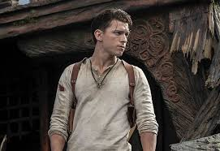
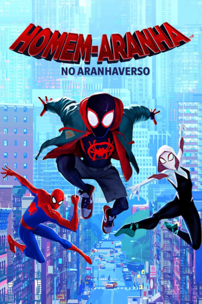

O ator americano que iniciou sua carreira no final do ano 1980.
Universo Homem-aranha

Thomas Stanley "Tom" Holland é um ator, diretor e dublador britânico.
Nascido em Los Angeles, mudou-se a Epsom, no Reino Unido, quando tinha três anos.
Melhores filmes
1) Homem-Aranha 2 (2004)

2) Homem-Aranha no Aranhaverso (2019)
